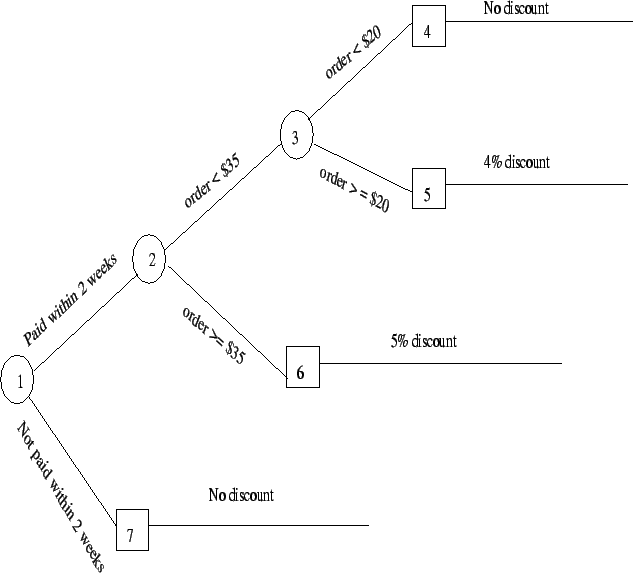

Next: Frames
Up: Codification Tools/Procedures
Previous: Decision Table
Contents
- It is also a knowledge
codification technique.
- A decision tree is usually a hierarchically arranged semantic network.
A decision tree for the phonecard company discounting policy
(as discussed above) is shown next.
Figure 6.3:
Example: Decision Tree
|

|
Knowledge Management Systems
2004-11-01